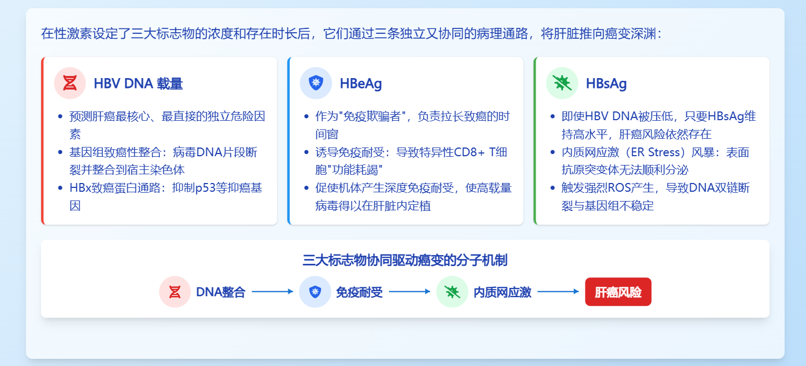
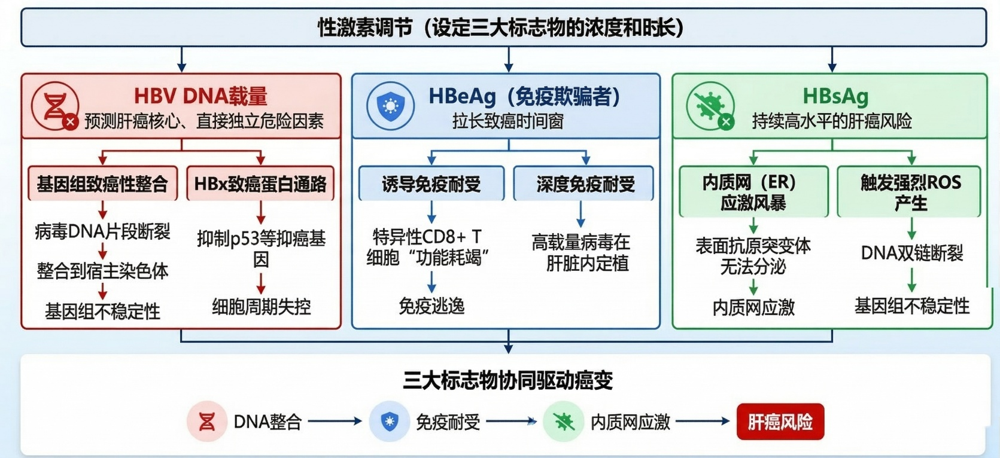
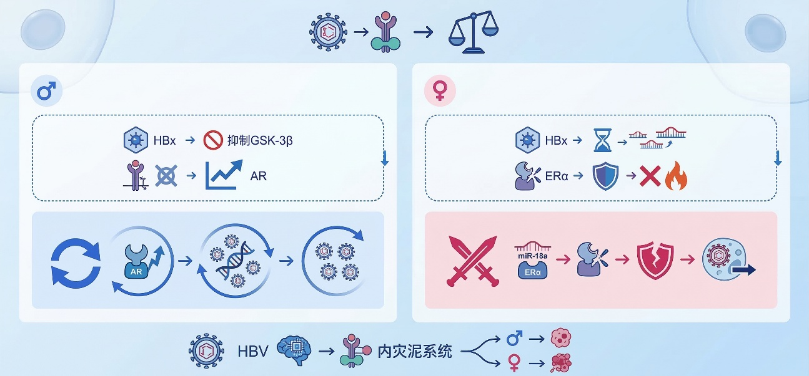
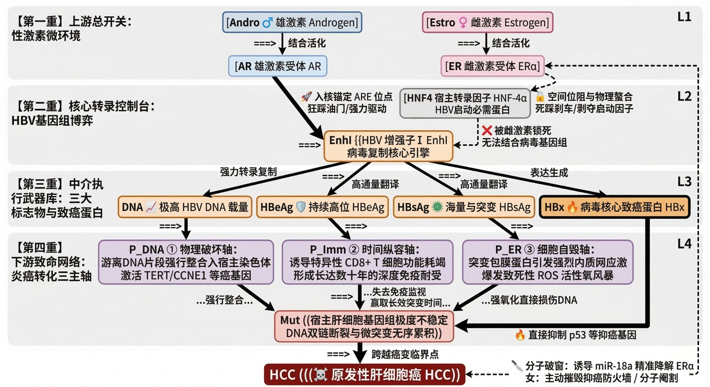

院史档案馆 · 2025 Annual Chronicle
2025年报数字史墙
以政策脉冲、科研产出、平台能力与社会协同为四维坐标，重绘年度高密度认知地图
31国家级课题
127核心论文
8.6PB治理数据资产
19区域协作网络
“真正改变时代的，不是单点技术突破，而是让知识、制度与社会需求在同一张图谱中共同进化。”
—— 年报特刊编委会序言
年度叙事 · 双栏密排正文
2025年，研究院围绕“可信数据底座、可解释智能中台、可落地应用网络”三层体系持续推进。在政策承接层面，完成对国家与地方重点任务的矩阵化映射，形成覆盖公共治理、医学研究、应急管理与产业协同的任务图谱。围绕跨域数据互认，团队建立了结构化质量评估机制，并在年度内完成多轮数据治理与语义对齐，为后续模型训练与应用交付提供高可靠样本。
科研转化方面，研究院推动“问题牵引式”联合攻关，形成从理论方法、工程实现到行业验证的闭环路径。多项成果以平台化组件形式进入业务场景，显著降低重复建设成本。与此同时，研究院持续推进人才梯队建设，通过跨学科编组、青年研究计划和开放协作机制，增强了组织面对复杂任务的韧性与响应速度。
在社会价值维度，年度重点项目实现了从“单一试点”向“区域网络”扩散。多个城市节点参与共建，使数据标准、流程机制与技术能力逐步趋同。公众服务效率、行业协同深度与风险预警能力均实现可测提升。展望下一周期，研究院将继续以长期主义视角推进基础能力建设，在不确定环境中保持系统性进化。
多轨波浪时间轴
政策轨
Q1 纲要发布Q2 标准试点Q3 联合评估Q4 区域推广
科研轨
算法升级语料扩展多模推理论文集群
产业轨
示范点1-6行业适配联邦协同规模部署
发光数据史料表
| 年代/阶段 | 关键制度事件 | 数据规模 | 模型能力跃迁 | 社会协同指数 | 代表成果 |
|---|---|---|---|---|---|
| 2022 | 跨域治理框架建立 | 2.1PB | 单任务分析 | 0.42 | 基础目录与接口规范 |
| 2023 | 行业联合机制成型 | 4.7PB | 多任务联合训练 | 0.56 | 省域协同示范工程 |
| 2024 | 高质量语料标准化 | 6.9PB | 检索增强推理 | 0.64 | 关键场景指标改善 |
| 2025 | 规模化运行与评估 | 8.6PB | 跨模态协同决策 | 0.79 | 19城联动应用网络 |
| 2026* | 连续运营与国际对标 | 10.3PB | 可信智能体编排 | 0.85 | 开放生态标准输出 |
*2026 为规划目标值，用于年度展陈推演。
照片画廊 · 历史与未来双重镜头




